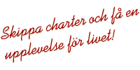
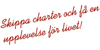

Australien: Guldkusten
Inför fjärde veckan lämnade vi Brisbane och tog oss själva ned längs hela Guldkusten fram till Sydney. I det här albumet kan du se oss klappa koalor, besöka Sea World och åka guidad båttur förbi Operahuset i Sydneys hamn.
Klicka på en bild för att visa bilderna för den dagen i ett bildspel.
3 januari:
Första dagen på egen hand i Australien. Balkongutsikt från hotellet i Surfers Paradise.
4 januari:
Sea World i Surfers Paradise med vattenskid- och delfinshower.
5 januari:
Camping med Niclas och Inda. Bad och lyxresort på kvällen.
6 januari:
Trädklättring och stopp i Kempsey.
7 januari:
Billabong Koala Park utanför Port Macquarie.
8 januari:
Ankomst till Sydney, något besvikna på hotellrum och Sega World.
9 januari:
Sista dagen i Australien och Sydney. Båttur utanför Sydneys hamn med Operahuset i sikte.